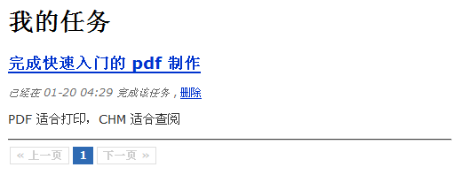

分页与最后的完善
随着我们往应用程序中添加了越来越多的任务，分页显示就势在必行了。QeePHP 对分页有各种内置的方法，而且可以使用现成的分页导航插件来减少工作量。
学会偷懒
当你需要往应用程序中添加一个新功能时，请首先查看 https://github.com/jackLucky/qeephpExtend，也许惊喜就在等着你。
这里我们使用 https://github.com/jackLucky/qeephpExtend/tree/master/control/pagination 这个分页导航插件。按照这个控件的说明把控件文件和样式表加入到应用程序中后，修改 tasks 控制器的 actionIndex() 方法为：
1 2 3 4 5 6 7 8 9 10 11
| $page = intval($this->_context->page); if ($page < 1) $page = 1; $select = Task::find('owner_id = ?', $this->_app->currentUserObject()->id()); $select->limitPage($page, 5); $this->_view['pagination'] = $select->getPagination(); $this->_view['tasks'] = $select->getAll();
|
最后修改 app/view/tasks/index.php 视图，在最后一行“”前加入：
1
| <?php $this->_control('pagination', 'my-pagination', array('pagination' => $pagination)); ?>
|

修改默认控制器
当前，查看任务列表需要我们在 URL 中明确指定访问 tasks 控制器，这显然很不友好。所以我们对默认的 default 控制器做一点小手术，
修改 app/controller/default_controller.php 文件的内容为：
1 2 3 4 5 6 7 8 9 10 11 12 13 14 15 16
| class Controller_Default extends Controller_Abstract { function actionIndex() { if ($this->_app->currentUserRoles()) { return $this->_redirect(url('tasks/index')); } else { return $this->_redirect(url('users/login')); } } }
|
修改后，todo 应用的功能就算齐备了。